MANY AGENTS.
ZERO CHAOS.
You juggle multiple AI CLIs (Claude Code, Codex, Gemini, Ollama) across multiple projects. Kronn brings shared memory, orchestration, and continuity. Local-first. 0 tokens on mechanical steps.
One shared brain.
All your agents plugged into it.
Six AI agents that ignore each other. Three diverging MCP configs. Fourteen copy-pasted prompts. We've all accepted this as normal. Kronn gives you one shared brain — local, plugged into everything.
The shared brain is everything below — drive it by hand in the web or desktop UI, or let your agents drive it directly.
The most advanced flow. The audit → tickets → PR pipeline: a preset pre-wires the bulk (auto-detected tracker, owner/repo), you finish the wiring (plugins, prompts, notify), and it runs on a cron or on a GitHub issue, with 2 human checkpoints.
All the docs (architecture, tech debt, conventions, glossary) in a token-optimized format, human-readable and AI-optimized (docs/AGENTS.md defines its structure). Drift detection, specialized audits (Security, Docker, RGAA…) and health score.
Persistent discussions resumed by any CLI, plus prioritized tasks shared across the global backlog, projects and discussion plans. Humans and agents update the same source of truth.
Reusable, versioned prompts (tokens · duration · cost), with an AI ✨ Improver. Compare them across N CLIs, then reuse them in a workflow or in batch.
De-agentifying means swapping mechanical steps for deterministic ones (Exec · Gate · Notify · ApiCall…) at 0 tokens. 12 step types, including data collection, transformation, Page publishing and SubWorkflow; the agent only steps in when it's truly needed.
55+ ready plugins, or any REST API via Custom API (an AI assistant builds it from a curl or a doc). The agent calls it without seeing the keys, or via a Quick API (a saved, replayable API call).
A workflow can fan out N agent discussions in parallel, each in its own dedicated git worktree: code modified simultaneously, your working tree intact, zero collision.
Encrypted vault (AES-256-GCM), the agent never sees the credentials. SSRF guards, allowlisted Exec. With Ollama: $0 tokens, your code stays with you.
Before.
After.
Here is what you do today, and what Kronn does for you.
- Your prompts copy-pasted across three Notion files and a stale Markdown doc.
- Switching Claude Code → Codex causes a full context reset.
- You play messenger between agents, manually copy-pasting every message across 3 windows.
- Three MCP configs maintained in parallel, divergence guaranteed.
- A Slack notification goes through an agent, so it burns tokens on every send.
- Sending an email or pushing a log also goes through an agent (MCP mail, plugin), tokens on every call.
- You re-explain your architecture on every new discussion.
- Quick Prompts versioned with
{{vars}}, metrics per iteration. - Same discussion, handed to the next CLI via MCP, zero copy-paste.
- 3 CLIs (Claude, Codex, Gemini…) talk inside a single Kronn discussion via
disc_join. Zero human messenger. - One interface, auto-propagation to all installed CLIs.
- Step
Notifyruns agentless: zero tokens. - Step
ApiCall(Resend, Mailjet, log webhook): zero tokens, calls the API directly, no LLM. docs/AGENTS.mdgenerated by audit, auto-read by every agent.
The app, for real.
The concept is nice. Here's what it actually looks like.
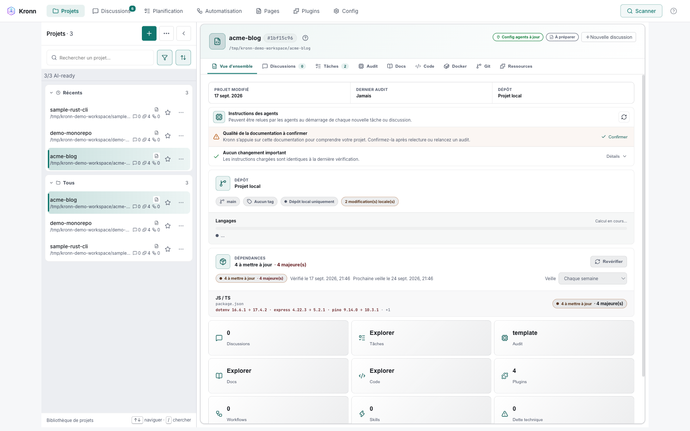

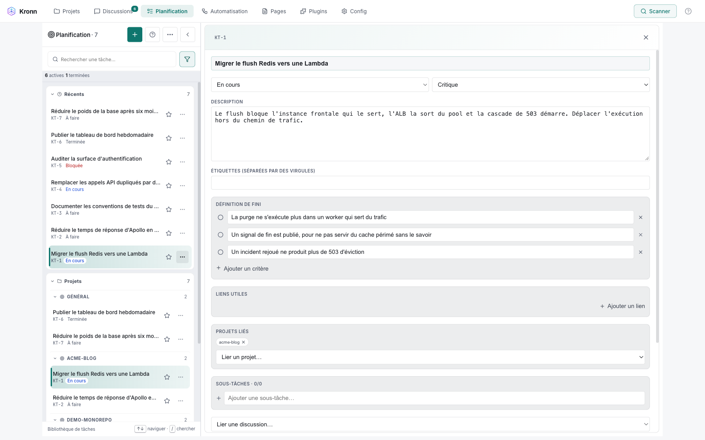

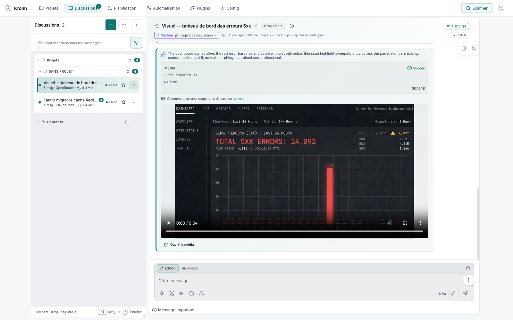
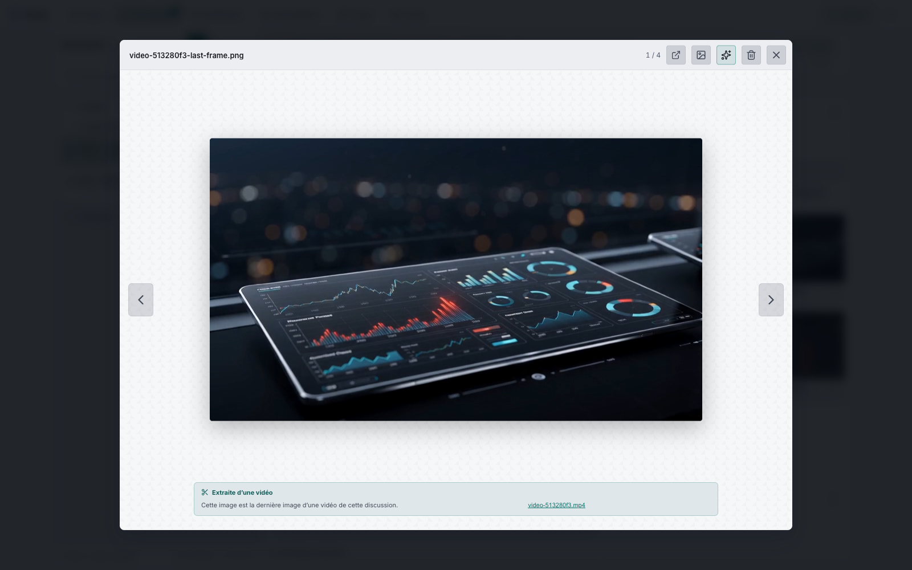


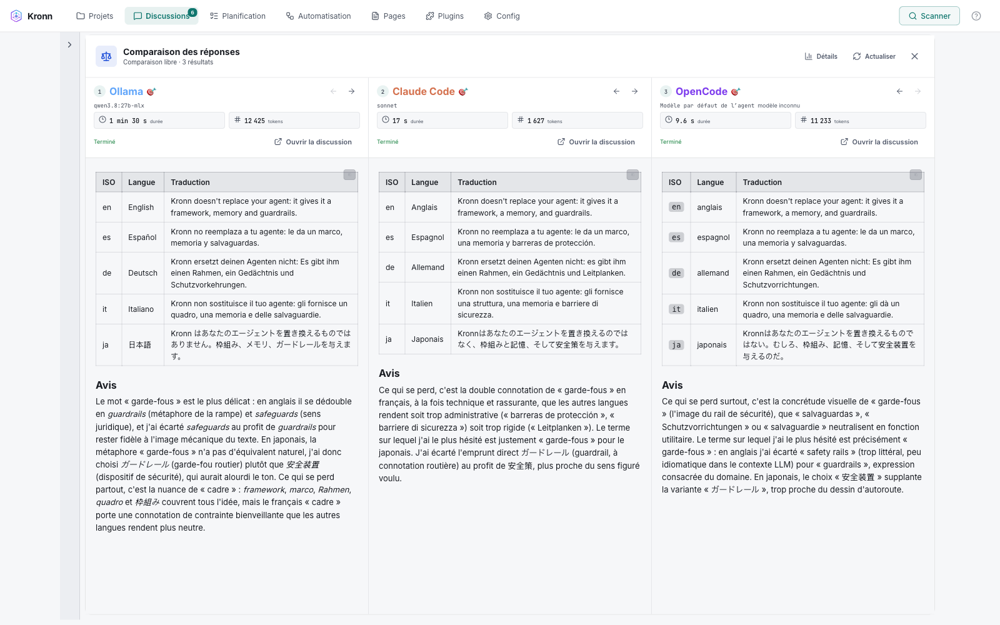
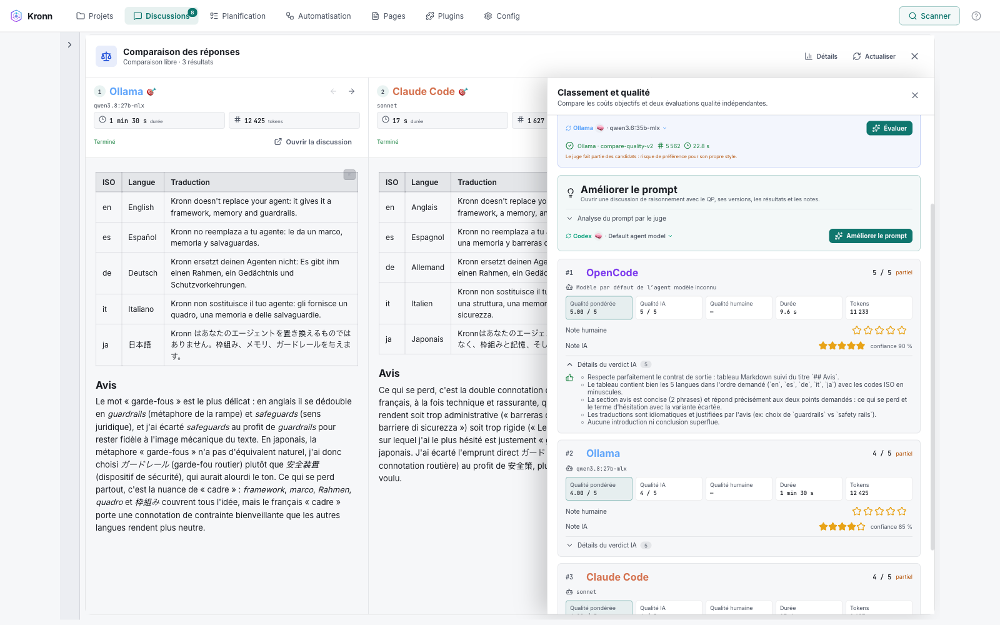
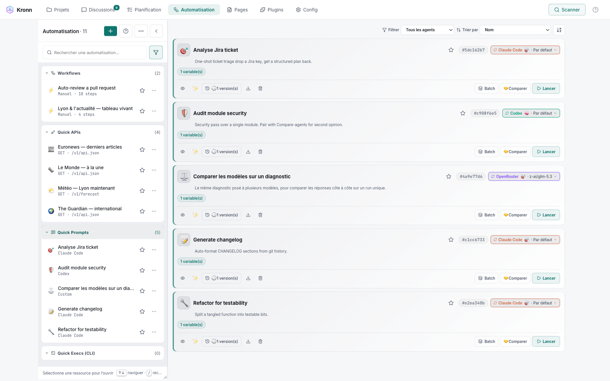
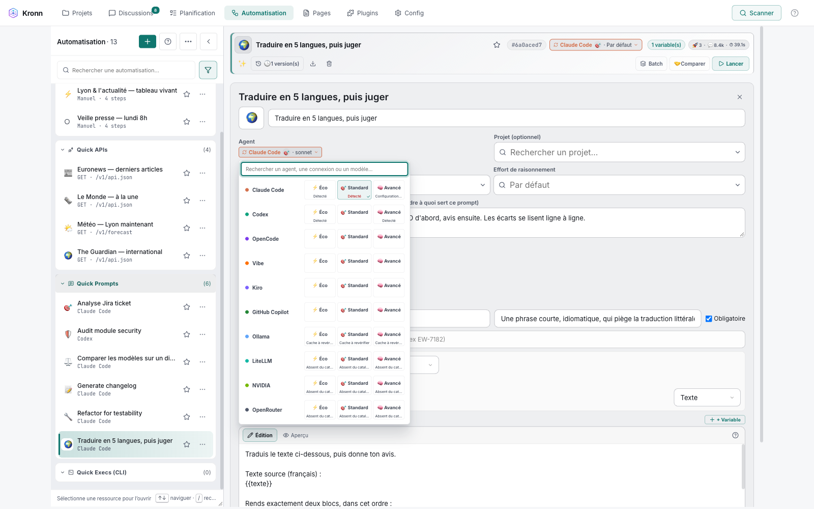


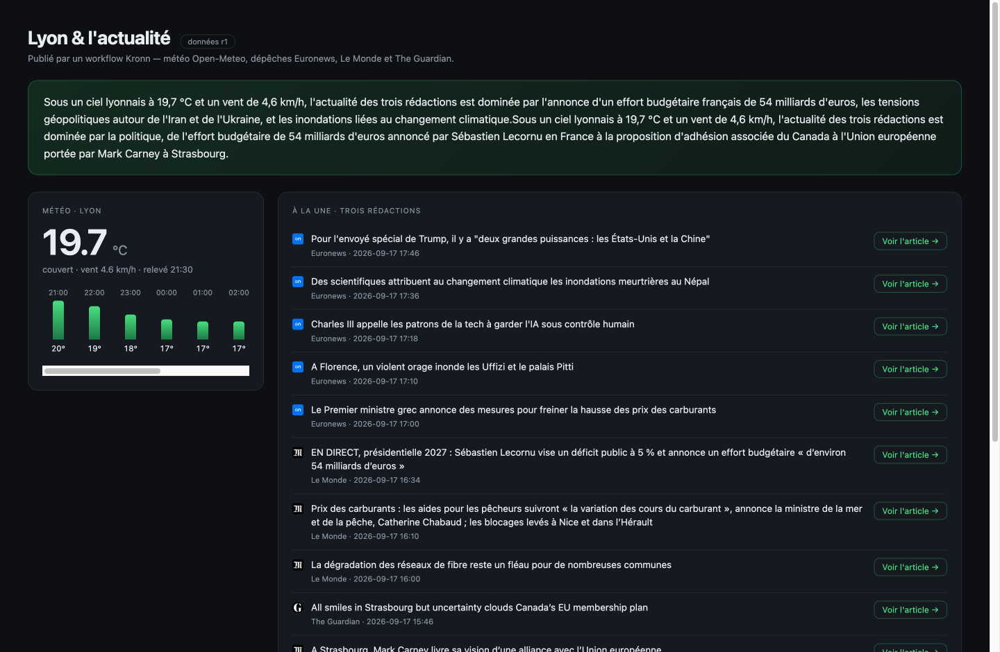
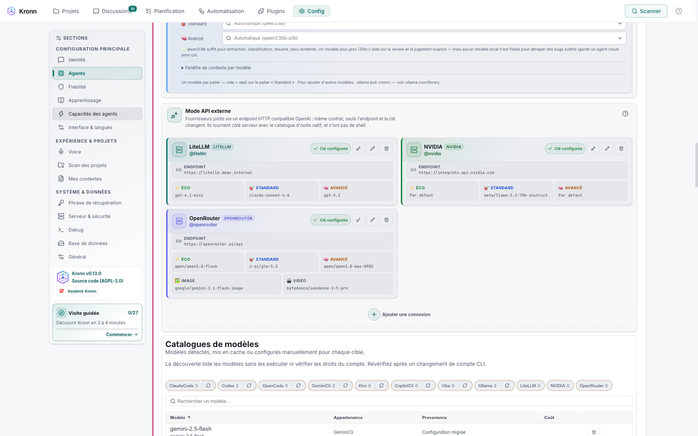

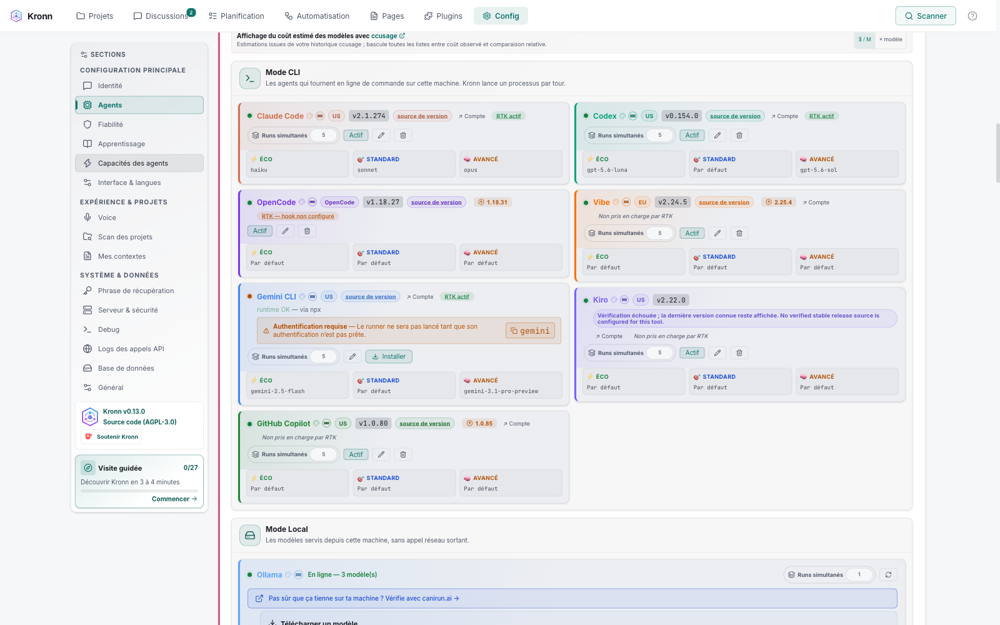
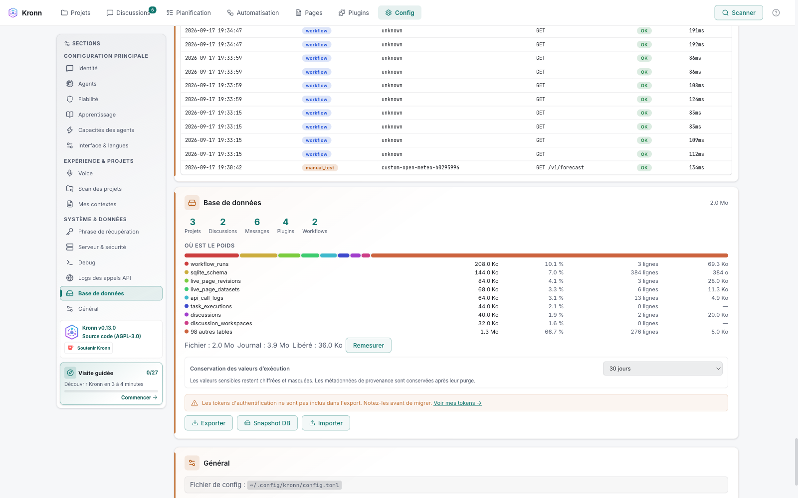
You still write prompts by feel.
You copy-paste your context from one agent to another.
You pay the AI to send a Slack webhook.
You maintain three MCP configs that diverge the moment you blink.
Kronn ends this era.
Everything
that ships in the box.
No roadmap, no soon™. Everything is shipped, in the code, verifiable. Below is the full list of what Kronn gives you today.
- Discussions persisted locally (SQLite)
- Global Planning + discussion plans shared with agents
- Cross-CLI resume: Claude exports, Codex picks up (0.8.4)
- Live multi-CLI: N agents inside one discussion (0.8.6)
- Assets inventory per discussion: images, files & uploads, search + download (0.10.0)
- Message attachments + full-screen image gallery (agent or human)
docs/AGENTS.mdgenerated by audit- User-context injection
~/.kronn/user-context/ - Linked repos: multi-repo context
- Canonical state
.kronn.jsonper project - Anti-secret filter on the audit
- Variables
{{vars}}+ conditional sections - Versioning + metrics for tokens · duration · cost
- Visual diff between versions
- ✨ AI Improver: suggests and deploys in 1 click
- Compare across N agents in parallel
- Chains: DnD reorder +
{{previous_qp.output}} - Binding profile · skill · directive
- 12 step types, including CollectApiData · TransformData · PublishPageData
- 0 tokens on mechanical steps (by definition)
- Reusable Quick Execs (CLI): tests · lint · PR/CI collection, shell-free, bounded output (0.10.0)
- Live Pages: sandboxed HTML + persisted JSON datasets + history
- PDF / DOCX export for Pages: CSS, SVG & canvas rendered faithfully
- AI Workflow Architect: dry-run + 1 click
- Batch workflows (fan-out · chaining · git worktree · integrated diff)
- Loops + state scratchpad + guards
- Rollback on failure
- CRON-schedulable: fully automated workflows
- AutoPilot loop (audit → tickets → workflow)
- Feasibility-Gated implementation
- Export / Import per-item
- 8 agents: Claude Code · Codex · Gemini · Ollama · LiteLLM · Vibe…
kronn-internalMCP: 91 tools for the agent to pilot Kronn- Continual Learning beta: evidence + human validation, off by default
- Eco mode via RTK: one-click token-killer proxy on supported agents
- Ollama 100% local + LiteLLM proxy · UI in EN · FR · ES · 简体中文
- MCP plugins: Atlassian · Linear · Notion · …
- API plugins: Resend · Mailjet · webhooks
- Custom API plugin · declare your own endpoints
- Multi-user P2P (chat + shared discussions)
- Rust core · React/TS UI · packaged with Tauri (Mac · Windows · Linux)
- AGPL-3.0 · no telemetry · no cookies
You start with an MCP plugin, the agent learns how the vendor responds, tests, iterates. Once the sequence stabilizes, a dedicated AI Helper walks you through switching to an API plugin: the AI leaves the loop, execution becomes deterministic and token-free.
Five structural
mechanisms.
No promised numbers, just the building blocks that let regular usage lower cost and raise quality over time. Each one is in the code, reproducible, verifiable.
Full project scan: stack, conventions, tech debt. Generates tier-loaded docs/AGENTS.md. AutoPilot (opt-in) turns debts into Jira tickets via MCP and pre-configures the processing workflow in 1 click.
Locally persisted discussions + 10 MCP tools disc_* for bidirectional cross-CLI continuation. The next CLI reads AND enriches the thread, not just consults.
Your global preferences (commit style, conventions, anti-patterns) live in ~/.kronn/user-context/. All your projects benefit automatically. Each preference added → effect everywhere.
Reusable prompts with {{vars}}. Versioned and measured (tokens · duration · cost). You iterate, compare, pick the winner.
Step-based orchestration: Agent step + mechanical steps at 0 tokens by definition. Collect several Quick APIs, visually reshape typed JSON and publish it to a sandboxed Live Page. CRON-schedulable.
What Kronn is not.
Being clear about what we're not is the honest move. Here is what Kronn was not built to be.
Keep Cursor, VSCode, Vim, or Aider for CLI pair-prog. Kronn orchestrates above, doesn't replace your editor, though you can do quite a bit from Kronn: git worktree, diff access, direct exec, human gates ;)
You bring Anthropic, OpenAI, Google, or Ollama 100% local. Kronn locks you into none.
Local-first desktop app. Your data, prompts and discussions never leave your machine.
You drive via UI, you don't code. Multi-CLI orchestrated, not LangGraph in Python.
Kronn workflows can be agentic or fully deterministic: Slack, email (Resend), CLIs and any API. Kronn simply does not aim to ship hundreds of turnkey no-code connectors; for that catalogue, n8n or Zapier remain more specialized.
For build, deploy, lint on git, keep GitHub Actions. Kronn orchestrates local-first AI agent CLIs, not repo-bound cloud pipelines.
Open source under AGPL-3.0. Free to build your product locally. The copyleft only kicks in if you distribute a modified Kronn to others. No license to buy, no seat.
5 minutes.
4 stages.
OK, convinced? Here is the local install. At the end you have an audited project, a measured Quick Prompt, and discussions that survive switching between 2 CLIs.
Two install paths:
Desktop app · download the binary (Mac, Windows, Linux) from releases.
Self-hosted · git clone -b <tag> then kronn start (CLI / headless, ideal for teams).
Local-first in both cases. Agent metrics stay local (QPs, runs, tokens, cost) · never cloud telemetry.
Open Kronn, add your project, launch audit with Briefing (≈ 2 min of guided Q&A). Kronn then scans your stack, detects conventions, identifies tech debt and generates tier-loaded docs/AGENTS.md.
Launch: 2 min. Background scan: 20-30 min on an average project, more on a monorepo. AutoPilot ready afterward to turn debts into tickets.
Automation tab, create a Quick Prompt. Drop a {{ticket}} variable in the template. Run it on an agent: Kronn records tokens, duration, cost.
You can run the same Quick Prompt on N agents in parallel to compare outputs.
Automation → Workflows tab, click New and pick a preset (Ticket-to-PR, Feasibility-Autopilot, Feature Planner…). Kronn pre-fills the steps Brief → Architecture → Code → Tests → Review with their human Gates. All you do is approve at each Gate.
The Quick Prompts from STAGE 03 work as building blocks inside your custom workflows.
The technical vocabulary.
Eight terms that show up everywhere in Kronn. Quick glossary to decode the rest: what it is, what it does.
Reusable prompt template with variables {{ticket}}, {{context}}. Versioned. Metrics recorded per version (tokens, duration, cost). ✨ Improver button to iterate with AI.
A sequence of Quick Prompts. Each QP can reference {{previous_qp.output}} to chain the previous output. Drag & drop reorderable.
Model Context Protocol · open standard (by Anthropic) letting AI agents access external tools. Kronn relies on MCP to bridge the CLIs and expose its own tools via kronn-internal.
The 12 workflow step types: 2 AI (Agent, BatchQuickPrompt), 9 mechanical zero-token steps (including CollectApiData, TransformData and PublishPageData), and SubWorkflow for composing pipelines.
Opt-in loop after audit: Kronn detects tech debt, creates Jira tickets via MCP, pre-configures a workflow to handle them. One click, done.
Implementation pattern for big tickets: Kronn generates a feasibility YAML manifest, then a human Gate (you approve or reject), then the agent codes following the manifest. Zero surprise.
The canonical doc source for a Kronn project. Generated by the audit. Tier-loaded (light always-on, sections on-demand). Auto-read by every CLI that opens the project.
4 flavors: MCP (vendor exposes a server, e.g. Atlassian), API (API-only vendor packaged, e.g. Resend), Hybrid (both), Custom API (declare your own endpoints).
Your machine.
Your data.
Local-first by default. No telemetry, no cookies, no Kronn server. Here is what is protected, and what we don't have yet: honesty over a shiny compliance badge.
- Local SQLite DB in
~/.kronn/ - Discussions, QPs, audits, configs: all on your machine
- No cloud sync, no telemetry, no cookies
- Your data only leaves if YOU launch a workflow that calls a cloud LLM
- API keys stored in the OS keychain (Mac/Windows/Linux)
- Anti-secret filter on the audit:
.envand vendor prefixes filtered beforedocs/AGENTS.md - No Kronn env var pushed to third-party CLIs
Execstep restricted to an allowlist (literal argv, no shell)- Step
Gatehuman-in-the-loop: the agent waits for your explicit approval - Audit log: each run persisted with timestamp, tokens, steps executed
- Not yet v1.0 stable. Current version v0.13.0, early access. The API, step types and schemas may evolve between versions.
- No SOC2 or GDPR certification at this time
- Single-user · no RBAC or team management
- If you use Anthropic / OpenAI / Google, your prompts go to them: their responsibility, not ours
- AGPL-3.0 → auditable code, but no external security audit at this stage